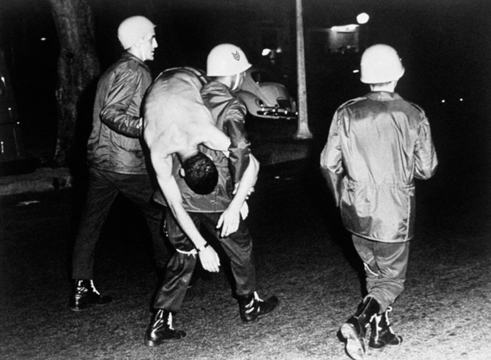
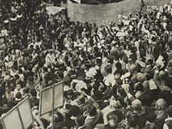
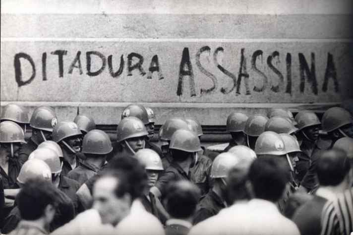
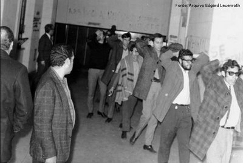

Estudante é carregado por oficiais do exército após confronto entre militares e estudantes no Rio de Janeiro.

Estudante de medicina durante protesto na Cinelândia, em 1968.

Cavalaria da polícia avança sobre estudantes que realizavam missa pela morte do estudante Edson Luís, em 1968.

Manifestantes na Marcha da Família com Deus pela Liberdade em 19 de março de 1964 na Praça da Sé, em São Paulo.

Pelo menos 1.500 pessoas foram presas em minas gerais.

Cavalaria da polícia avança sobre estudantes que realizavam missa pela morte do estudante Edson Luís, em 1968.

Manifestação no Rio de Janeiro em 1968.

Confronto entre oficiais e estudantes, em 1968.

Prisão de estudantes.